Stadtansichten
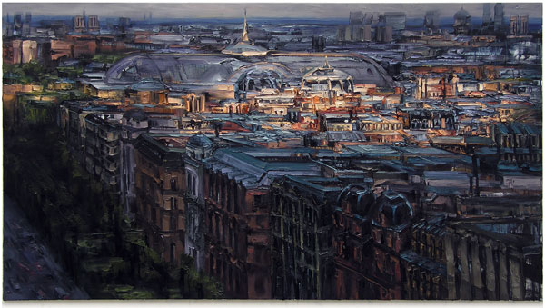
Stadtansicht XX (Grand Palais)
Öl auf Nessel, 110 x 200 cm, 2011
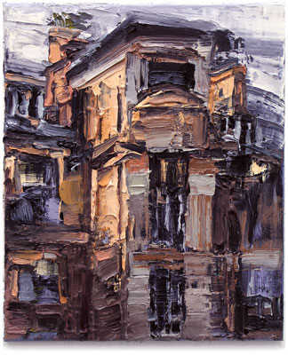
Stadtansicht XIX
Öl auf Nessel, 40 x 30 cm, 2011
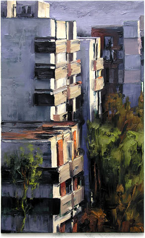
Stadtansicht XVIII
Öl auf Nessel 80 x 50 cm, 2011
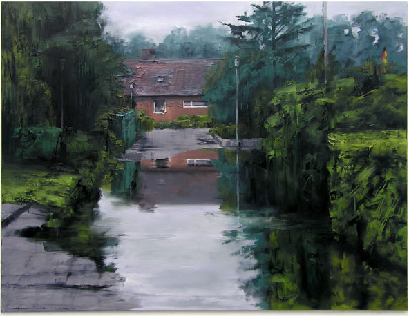
Spiegelung IV
Öl auf Nessel, 145 x 190 cm, 2011
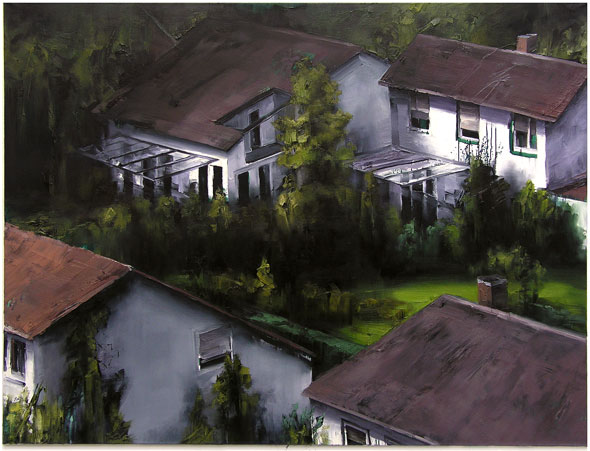
Stadtansicht XV
Öl auf Nessel, 145 x 190 cm, 2010
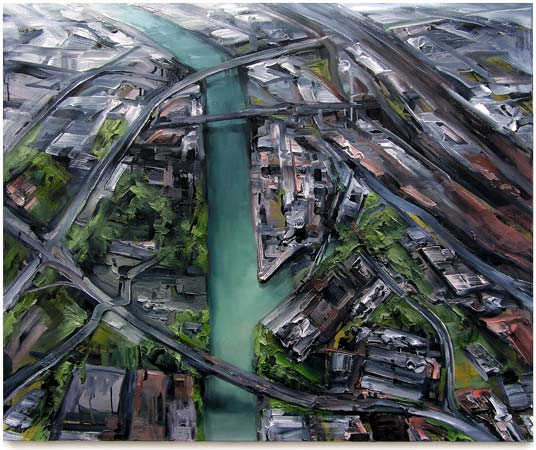
Stadt (Hafen/Ms II)
Öl auf Nessel, 100 x 120 cm, 2006
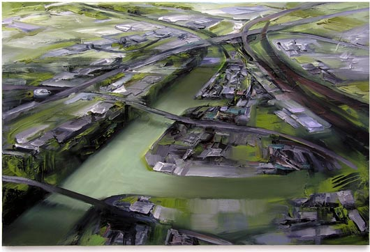
Stadt (Hafen/Ms III)
Öl auf Nessel, 80 x 120 cm, 2006
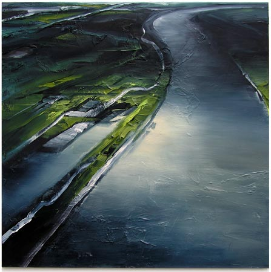
Rhein II
Öl auf Nessel, 95 x 95 cm, 2006
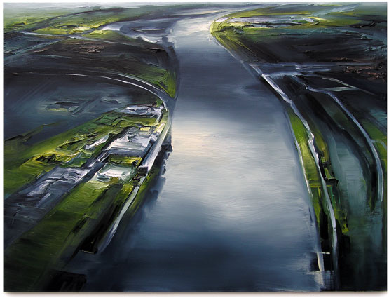
Rhein III
Öl auf Nessel, 90 x 120 cm, 2006
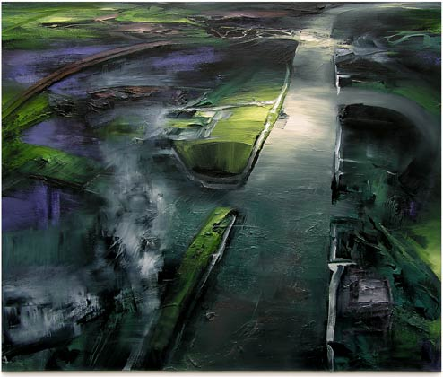
Rhein IV
Öl auf Nessel, 100 x 120 cm, 2006
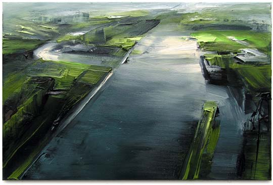
Rhein V
Öl auf Nessel, 40 x 60 cm, 2007
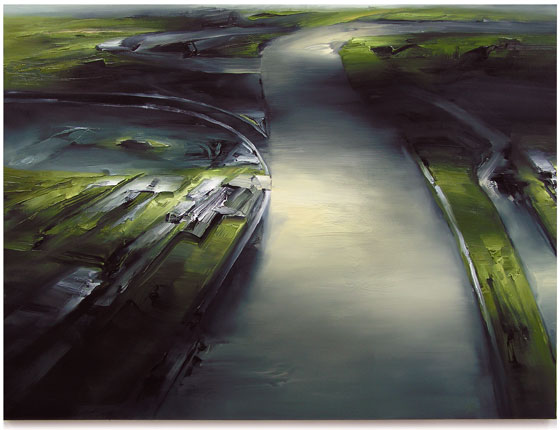
Rhein VI
Öl auf Nessel, 105 x 140 cm, 2007
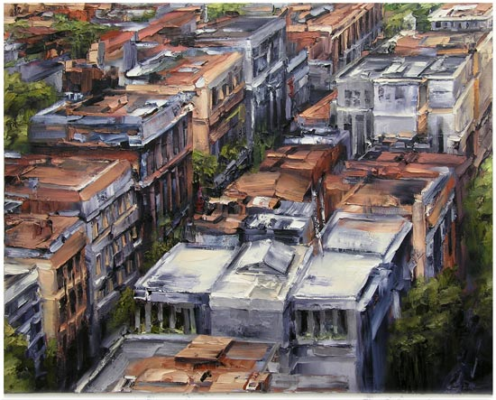
Stadtansicht XIII
Öl auf Nessel, 100 x 125 cm, 2009
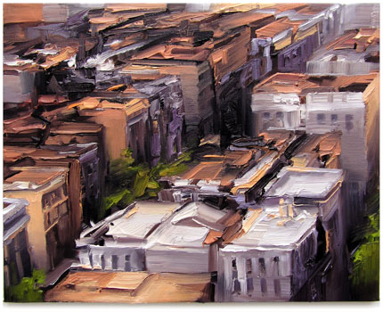
Stadtansicht IX
Öl auf Nessel, 40 x 50 cm, 2007
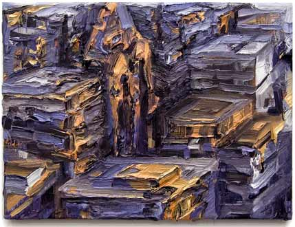
Stadtansicht VII
Öl auf Nessel, 24 x 30 cm, 2005
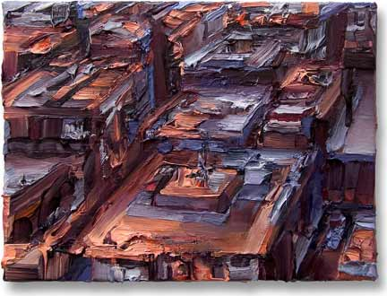
Stadtansicht IV
Öl auf Nessel, 30 x 40 cm, 2004
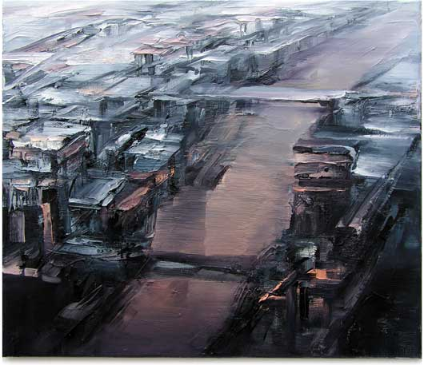
Stadtansicht VIII
Öl auf Nessel, 60 x 70 cm, 2007
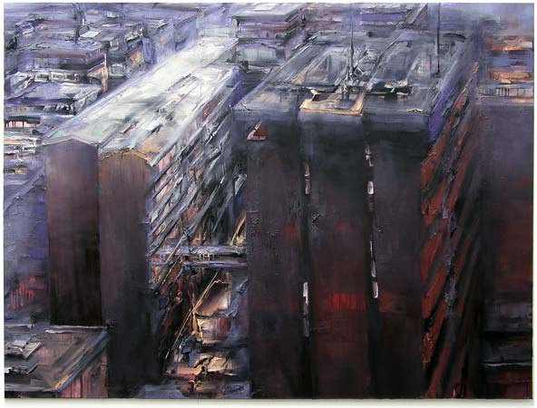
Stadtansicht III
Öl auf Nessel, 150 x 200 cm, 2004
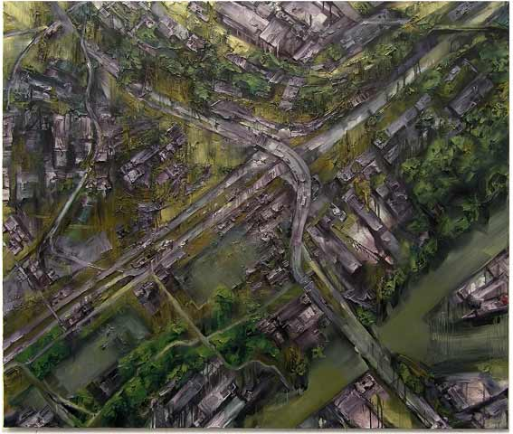
Stadt (B51)
Öl auf Nessel, 160 x 190 cm, 2005
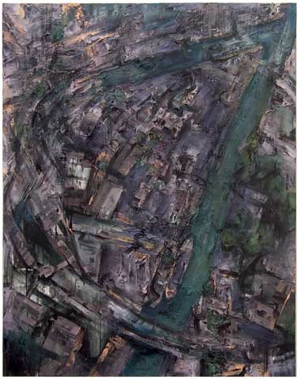
Stadt (Hafen)
Öl auf Nessel, 190 x 150 cm, 2003
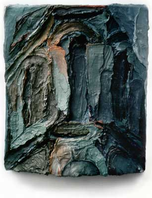
Fassade (Berlin)
Öl auf Nessel, 28 x 24 cm, 1992